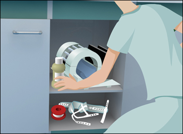

| Preparación del equipo |
|
 |
|
Una vez conocidos cuales son los componentes de un equipo de RM y la complejidad del aparato es razonable pensar que es muy importante un ajuste periódico del mismo según indicaciones del fabricante.
Es imprescindible mantener las normas extrictamente acerca del material que puede introducirse en la sala de RM no sólo por el potencial riesgo de fallo de la maquinaria sino por el posible daño a personal sanitario o pacientes próximos al equipo.
El imán tiene tal potencia que arrastra literalmente cuerpos ferromagnéticos (tijeras, bolígrafos, pinzas, sillas de ruedas, balas de oxígeno, enceradoras…) contra el arco de tal forma que supondría un potencial peligro de contusión o lesión corporal de los presentes en la sala en ese momento. |
|
|
El sistema de refrigeración del equipo es fundamental. Habitualmente se emplea un sistema cerrado de helio u otro material similar para ello. Pero en un momento dado puede producirse una mala salida del refrigerante con paso a la sala de RM con riesgo de congelación o al contrario, un sobrecalientamiento del equipo con riesgo de accidente eléctrico, incendio o explosión. |
|
 |
|
Antes de comenzar el estudio debemos asegurarnos de la presencia de todo el material necesario: sacos, vendas fijadoras, antenas, vías venosas, sueros y botellas de contraste.
Se deberá encender el equipo y software con suficientemente tiempo antes del comienzo de la sesión de RM para reducir el tiempo de espera del enfermo en la sala vestuario o sobre la camilla de exploración.
Es imprescindible mantener limpia y recogida la sala de RM.
Deben introducirse los datos del paciente, nombre y apellidos, tipo de estudio a realizar, protocolo designado, secuencias a realizar, médico que solicita, etc.
Deberá prepararse el sistema de infusión de contraste, bomba y sincronizarlo con el equipo de RM en función de si se procederá a la inyección automática o manual.. |
|
| » Volver |